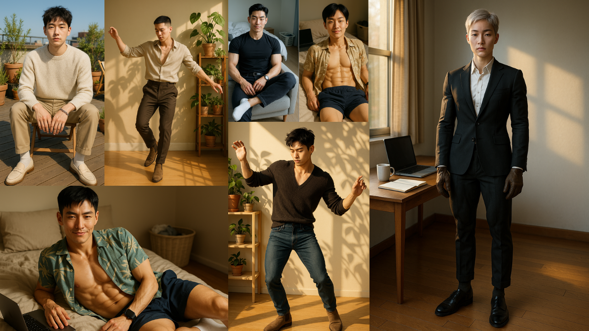

이 웹버전은 입문자도 쉽게 사용할 수 있는 무료 프롬프트 생성 도구입니다.
국적 선택, 기본 포즈와 감정 조합만으로도 감각적인 이미지 프롬프트를 빠르게 만들어보세요.
총 약 2,000만 가지 이상의 조합이 가능하며, 실제 생성된 프롬프트는 ChatGPT, Gemini, Midjourney, DALL·E, Sora, Stable Diffusion, Adobe Firefly, Microsoft Copilot, NightCafe Creator, Artbreeder, Deep Dream Generator, Hotpot.ai, starryai 등 다양한 이미지 생성 AI에서 바로 사용 가능합니다.
더 정밀한 얼굴형, 손톱 스타일, 고급 렌더링 퀄리티, 조명-피부 묘사 등을 포함한 기능은 추후 공개됩니다. (실시간 업데이트 중)

| *랜덤 생성시 간혹 행동과 포즈간에 충돌이 일어날 수 있습니다.
| *행동과 포즈는 논리적이여야 합니다. 예)누워서는 커피를 마실 수 없습니다.
| *ChatGPT의 품질이 안 좋을 경우, Sora, Gemini를 시도해보세요.
| *이미지를 활용할 때 발생하는 저작권이나 기타 문제 등의 책임은 개발자와는 관계가 없습니다.